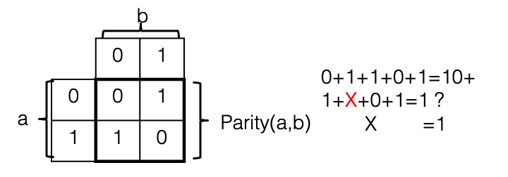

Input and Output
Contents
40. Input and Output#
Input/Output (I/O) devices are crucial to the operation of a computer. The data that a program processes — as well as the program binary itself — must be loaded into memory from some I/O device such as a disks, networks, or keyboard. Similarly, without a way to output the results of a computation to the monitors or to storage, those results would be lost.
One of the primary functions of the operating system is to manage these I/O devices. It should control access to them, as well as providing a consistent programming interface across a wide range of hardware devices with similar functionality but differing details.

Fig. 40.1 Supporting devices#
We first describe the characteristics of device hardware, and then how the OS interacts with that hardware.
40.1. IO Hardware#
We outline structure of a standard computer, device controllers, how the OS interacts with the controller using port and memory mapped I/O, how interrupts work, and conclude with a discussion of Direct Memory Access (DMA).

Fig. 40.2 An abstract model of a computer.#
40.1.1. Structure of a computer#
At the start of the course, we presented a simple model of hardware (Fig. 40.2) was discussed. The CPU is connected to high speed memory, and through a lower speed bus to a network controller and disk controller that are in turn connected to a network (ethernet in this case) and a disk.
Fig. 40.3 shows the more complicated architecture of a relatively modern Intel-architecture. Different parts of the system are connected by buses, or communication channels, operating at various speeds. The Front-Side Bus carries all memory transactions which miss in L1 and L2 cache, and the North Bridge directs these transactions to memory (DDR2 bus) or I/O devices (PCIe bus) based on their address. The PCI Express (PCIe) is somewhat slower than the front-side bus, but can be extended farther; it connects all the I/O devices on the system. In some cases (like USB and SATA), a controller connected to the PCIe bus (although typically located on the motherboard itself) may interface to a yet slower external interface. Finally, the ISA bus, used to connect slow devices like keyboards, is a vestige of the original IBM PC; for some reason, they’ve never moved some crucial system functions off of it, so it’s still needed.1

Fig. 40.3 A standard Intel PC Architecture#
40.1.2. Controllers#
I/O devices typically connected as PCI/ISA cards installed on the mother board have, in additional to their mechanical components, controllers that manage the device. The task of this controller is to convert from the operations on the bus to device specific operations. The processor interacts with these controllers by reading and writing controller registers.

Fig. 40.4 Registers of an Intel network interface card. It contains around 5600 32-bit registers broken down as shown. Note that complex OSes, like Linux, only initialize around 1000 of these registers.#
To understand how complex modern devices can be, consider Fig. 40.4 that shows the breakdown of registers of a modern Intel NIC. There are over 5600 32 bit registers, providing enormous complexity in how the OS can configure and interact with the device. As a result, these controllers often have a general purpose CPU, a fair amount of RAM to buffer data going to/from the device, and often some permanent flash storage. The software that used on these processors, typically referred to as firmware is complex enough that it must be regularly upgraded to deal with bugs. This turns out to be a massive attack surface in today’s computers. For example the following story describes one technique that has been used by the NSA to embed undetectable spyware on disks.
40.1.3. Accessing the controller#
The OS talks with the controller by reading and writing registers of the device and by reading and writing data that is buffered by the controller. Certain CPUs, including Intel architecture, contain support for a secondary I/O bus, with a smaller address width and accessed via special instructions. (e.g. “IN 0x100” to read a byte from I/O location 0x100, which has nothing to do with reading a byte from memory location 0x100). This is typically called port mapped I/O.
All architectures support Memory-mapped I/O, where devices can be mapped in the physical memory space and accessed via standard load and store instructions.
Depending on the system architecture, the device may be responsible for decoding the full address and determining when it has been selected, or a select signal may indicate when a particular slot on the bus is being accessed. Almost all computers today use a version of the PCI bus, which uses memory-mapped access, and at boot time, assigns each I/O device a physical address range to which it should respond.
40.1.4. Polled vs. Interrupt-driven I/O#

Fig. 40.5 Polled I/O#
The
simplest way to control an I/O device is for the CPU to issue commands
and then wait, polling a device status register until the operation is
complete. In Fig. 40.5 (a) an application requests I/O via e.g. a
read system call; the OS (step 1) then writes to the device command
register to start an operation, after which (step 2) it begins to poll
the status register to detect completion. Meanwhile (step 3) the device
carries out the operation, after which (step 4) polling by the OS
detects that it is complete, and finally (step 5) the original request
(e.g. read) can return to the application.

Fig. 40.6 Interrupt
driven I/O#
The alternate is interrupt-driven I/O, as shown in Fig. 40.6 (b). After (step 1) issuing a request to the hardware, the OS (step 2) puts the calling process to sleep and switches to another process while (step 3) the hardware handles the request. When the I/O is complete, the device (step 4) raises an interrupt. The interrupt handler then finishes the request. In the illustrated example, the interrupt handler (step 5) reads data that has become available, and then (step 6) wakes the waiting process, which returns from the I/O call (step 7) and continues.
40.1.5. Interrupts#
We have already mentioned Interrupts many times, but nows a good time to flesh them out in a bit more detail. To handle asynchronous I/O events, CPUs provide an interrupt mechanism. In response to a signal from an I/O device the CPU executes an interrupt handler function, returning to its current execution when the handler is done. The CPU essentially performs a forced function call, saving the address of the next instruction on the stack and jumping to the interrupt handler; the difference is that instead of doing this in response to a CALL instruction, it does it at some arbitrary time (but between two instructions) when the interrupt signal is asserted.
Most CPUs have several interrupt inputs; these correspond to an interrupt vector table in memory, either at a fixed location or identified by a special register, giving the addresses of the corresponding interrupt handlers. As an example, below we see the corresponding table for an 8088 CPU as found in the original IBM PC, which provides handler addresses for external hardware interrupts as well as exceptions which halt normal program execution, such as dividing by zero or attempting to execute an illegal instruction.
Index Description DOS name
------- ------------------------- ------------
0 divide by zero
1 single step
2 non-maskable
3 debug break
4 debug break on overflow
5 -unused-
6 invalid instr.
7 -unused-
8 system timer IRQ0
9 keyboard input IRQ1
10 line printer 2 IRQ2, LPT2
11 serial port 2 IRQ3, COM2
12 serial port 1 IRQ4, COM1
13 hard disk IRQ5
14 floppy disk IRQ6
15 line printer 1 IRQ7, LPT1
16- software-defined
255 interrupts
: 8086/8088 interrupts as defined by the IBM PC hardware.
The simplest interrupt-generating device is a timer, which does nothing except generate an interrupt at a periodic interval. As shown below, we see why it is called a timer—one of its most common uses is to keep track of time.
extern int time_in_ticks;
timer_interrupt_handler() {
time_in_ticks++;
}
Another simple use for interrupts is for notification of keyboard input. Besides being useful for a “cancel” command like control-C, this is also very useful for type-ahead. On slower computers (e.g. the original IBM PC executed less than half a million instructions per second) a fast typist can hit multiple keys while a program is busy. A simple keyboard interface only holds one keystroke, causing additional ones to be lost. By using the keyboard interrupt, the operating system can read these keystrokes and save them, making them available to the program the next time it checks for input.
40.1.6. Direct Memory Access (DMA)#
The CPU could copying data between I/O devices and memory using normal memory load and store instructions. Such an approach works well on computers such as the Apple II or the original IBM PC which run at a few MHz, where the address and data buses can be extended at full speed to external I/O cards. A modern CPU runs at over 3 GHz, however; during a single clock cycle light can only travel about 4 inches, and electrical signals even less. Fig. 40.7 shows example latencies for a modern CPU (in this case an Intel i5, with L3 cache omitted) to read a data value from L1 and L2 cache, a random location in memory (sequential access is faster), and a register on a device on the PCIe bus. (e.g. the disk or ethernet controller) In such a system, reading data from a device in 4-byte words would result in a throughput of 5 words every microsecond, or 20MB/s — far slower than a modern network adapter or disk controller.

Fig. 40.7 Latency between CPU and various levels of memory/IO hierarchy#

Fig. 40.8 DMA access for high-speed data transfer#
Almost all computers today use the PCIe bus. Transactions on the PCIe bus require a negotiation stage, when the CPU (or a device) requests access to bus resources, and then is able to perform a transaction after being granted access. In addition to basic read and write requests, the bus also supports Direct Memory Access (DMA), where I/O devices are able to read or write memory directly without CPU intervention. Fig. 40.8 shows a single programmed-I/O read (top) compared to a DMA burst transfer (bottom). While the read request requires a round trip to read each and every 4-byte word, once the DMA transfer is started it is able to transfer data at a rate limited by the maximum bus speed. (For an 8 or 16-lane PCIe card this limit is many GB/s)
A device typically requires multiple parameters to perform an operation and transfer the data to or from memory. In the case of a disk controller, for instance, these parameters would include the type of access (read or write), the disk locations to be accessed, and the memory address where data will be stored or retrieved from. Rather than writing each of these parameters individually to device registers, the parameters are typically combined in memory in what is called a DMA descriptor, such as the one shown in Fig. 40.9. A single write is then used to tell the device the address of this descriptor, and the device can read the entire descriptor in a single DMA read burst. In addition to being more efficient than multiple programmed I/O writes, this approach also allows multiple requests to be queued for a device. (In the case of queued disk commands, the device may even process multiple such requests simultaneously.) When an I/O completes, the device notifies the CPU via an interrupt, and writes status information (such as success/failure) into a field in the DMA descriptor. (or sometimes in a device register, for simple devices which do not allow multiple outstanding requests.) The interrupt handler can then determine which operations have completed, free their DMA descriptors, and notify any waiting processes.

Fig. 40.9 List of typical DMA descriptors#
40.1.7. More on Disks#
Earlier we introduced Disk hardware in sufficient detail to enable us to introduce file systems. In this section we go deeper discussing how disks are scheduled, cover RAID storage systems, a bit on SSDs, etc…
40.1.7.1. Disk scheduling#
A number of strategies are used to avoid the full penalties of seek and rotational delay in disks. One of these strategies is that of optimizing the order in which requests are performed—for instance reading sectors 10 and 11 on a single track, in that order, would require a seek, followed by a rotational delay until sector 10 was available, and then two sectors of transfer time. However reading 11 first would require the same seek and about the same rotational delay (waiting until sector 11 was under the head), followed by a full rotation to get from section 12 all the way back to sector 10.
Changing the order in which disk reads and writes are performed in order to minimize disk rotations is known as disk scheduling, and relies on the fact that multitasking operating systems frequently generate multiple disk requests in parallel, which do not have to be completed in strict order. Although a single process may wait for a read or write to complete before continuing, when multiple processes are running they can each issue requests and go to sleep, and then be woken in the order that requests complete.
40.1.7.1.1. Primary Disk Scheduling Algorithms#
The primary algorithms used for disk scheduling are:
first-come first-served (FCFS): in other words no scheduling, with requests handled in the order that they are received.
Shortest seek time first (SSTF): this is the throughput-optimal strategy; however it is prone to starvation, as a stream of requests to nearby sections of the disk can prevent another request from being serviced for a long time.
SCAN: this (and variants) are what is termed the elevator algorithm — pending requests are served from the inside to the outside of the disk, then from the outside back in, etc., much like an elevator goes from the first floor to the highest requested one before going back down again. It is nearly as efficient as SSTF, while avoiding starvation. (With SSTF one process can keep sending requests which will require less seek time than another waiting request, “starving” the waiting one.)
More sophisticated disk head scheduling algorithms exist, and could no doubt be found by a scan of the patent literature; however they are mostly of interest to hard drive designers.
40.1.7.1.2. Implementing Disk Scheduling#
Disk scheduling can be implemented in two ways — in the operating system, or in the device itself. OS-level scheduling is performed by keeping a queue of requests which can be re-ordered before they are sent to the disk. On-disk scheduling requires the ability to send multiple commands to the disk before the first one completes, so that the disk is given a choice of which to complete first. This is supported as Command Queuing in SCSI, and in SATA as Native Command Queuing (NCQ).
Note that OS-level I/O scheduling is of limited use today for improving overall disk performance, as the OS has little or no visibility into the internal geometry of a drive. (OS scheduling is still used to merge adjacent requests into larger ones and to allocate performance fairly to different processes, however.)
40.1.7.2. On-Disk Cache#
In addition to scheduling, the other strategy used to improve disk performance is caching, which takes two forms—read caching (also called track buffering) and write buffering. Disk drives typically have a small amount of RAM used for caching data [^3]. Although this is very small in comparison the the amount of RAM typically dedicated to caching on the host, if used properly it can make a significant difference in performance.
At read time, after seeking to a track it is common practice for the disk to store the entire track in the on-disk cache, in case the host requests this data in the near future. Consider, for example, the case when the host requests sector 10 on a track, then almost (but not quite) immediately requests sector 11. Without the track buffer it would have missed the chance to read 11, and would have to wait an entire revolution for it to come back around; with the track buffer, small sequential requests such as this can be handled efficiently.
Write buffering is a different matter entirely, and refers to a feature where a disk drive may acknowledge a write request while the data is still in RAM, before it has been written to disk. This can risk loss of data, as there is a period of time during which the application thinks that data has been safely written, while it would in fact be lost if power failed.
Although in theory most or all of the performance benefit of write buffering could be achieved in a safer fashion via proper use of command queuing, this feature was not available (or poorly implemented) in consumer drives until recently; as a result write buffering is enabled in SATA drives by default. Although write buffering can be disabled on a per-drive basis, modern file systems typically issue commands[^4] to flush the cache when necessary to ensure file system data is not lost.
40.1.7.3. SATA and SCSI#
Almost all disk drives today use one of two interfaces: SATA (or its precursor, IDE) or SCSI. The SATA and IDE interfaces are derived from an ancient disk controller for the PC, the ST-506, introduced in about 1980. This controller was similar to—but even cruder than—the disk interface in our fictional computer, with registers for the command to execute (read/write/other) and address (cylinder/head/sector), and a single register which the CPU read from or wrote to repeatedly to transfer data. What is called the ATA (AT bus-attached) or IDE (integrated drive electronics) disk was created by putting this controller on the drive itself, and using an extender cable to connect it back to the bus, so that the same software could still access the control registers. Over the years many extensions were made, including DMA support, logical block addressing, and a high-speed serial connection instead of a multi-wire cable; however the protocol is still based on the idea of the CPU writing to and reading from a set of remote, disk-resident registers.
In contrast, SCSI was developed around 1980 as a high-level, device-independent protocol with the following features:
Packet-based. The initiator (i.e. host) sends a command packet (e.g. READ or WRITE) over the bus to the target; DATA packets are then sent in the appropriate direction followed by a status indication. SCSI specifies these packets over the bus; how the CPU interacts with the disk controller to generate them is up to the maker of the disk controller. (often called an HBA, or host bus adapter)
Logical block addressing. SCSI does not support C/H/S addressing — instead the disk sectors are numbered starting from 0, and the disk is responsible for translating this logical block address (LBA) into a location on a particular platter. In recent years logical addressing has been adopted by IDE and SATA, as well.
40.1.7.4. SCSI over everything#
SCSI (like e.g. TCP/IP) is defined in a way that allows it to be carried across many different transport layers. Thus today it is found in:
USB drives. The USB storage protocol transports SCSI command and data packets.
CD and DVD drives. The first CD-ROM and CD-R drives were SCSI drives, and when IDE CDROM drives were introduced, rather than invent a new set of commands for CD-specific functions (e.g. eject) the drive makers defined a way to tunnel existing SCSI commands over IDE/ATA (and now SATA).
Firewire, as used in some Apple systems.
Fibre Channel, used in enterprise Storage Area Networks.
iSCSI, which carries SCSI over TCP/IP, typically over Ethernet
and no doubt several other protocols as well. By using SCSI instead of defining another block protocol, the device makers gained SCSI features like the following:
Standard commands (“Mode pages”) for discovering drive properties and parameters.
Command queuing, allowing multiple requests to be processed by the drive at once. (also offered by SATA, but not earlier IDE drives)
Tagged command queuing, which allows a host to place constraints on the re-ordering of outstanding requests.
40.1.7.5. RAID and other remapping#
There is no need for the device on the other end of the SCSI (or SATA) bus to actually be a disk drive. (You can do this with C/H/S addressing, as well, but it requires creating a fake drive geometry, and then hoping that the operating system won’t assume that it’s the real geometry when it schedules I/O requests) Instead the device on the other end of the wire can be an array of disk drives, a solid-state drive, or any other device which stores and retrieves blocks of data in response to write and read commands. Such disk-like devices are found in many of today’s computer systems, both on the desktop and especially in enterprise and data center systems, and include:
Partitions and logical volume management, for flexible division of disk space
Disk arrays, especially RAID (redundant arrays of inexpensive disks), for performance and reliability
Solid-state drives, which use flash memory instead of magnetic disks
Storage-area networks (SANs)
De-duplication, to compress multiple copies of the same data
Almost all of these systems look exactly like a disk to the operating system. Their function, however, is typically (at least in the case of disk arrays) an attempt to overcome one or more deficiencies of disk drives, which include:
Performance: Disk transfer speed is determined by (a) how small bits can be made, and (b) how fast the disk can spin under the head. Rotational latency is determined by (b again) how fast the disk spins. Seek time is determined by (c) how fast the head assembly can move and settle to a final position. For enough money, you can make (b) and (c) about twice as fast as in a desktop drive, although you may need to make the tracks wider, resulting in a lower-capacity drive. To go any faster requires using more disks, or a different technology, like SSDs.
Reliability: Although disks are surprisingly reliable, they fail from time to time. If your data is worth a lot (like the records from the Bank of Lost Funds), you will be willing to pay for a system which doesn’t lose data, even if one (or more) of the disks fails.
Size: The maximum disk size is determined by the available technology at any time—if they could build them bigger for an affordable price, they would. If you want to store more data, you need to either wait until they can build larger disks, or use more than one. Conversely, in some cases (like dual-booting) a single disk may be more than big enough, but you may need to split it into multiple logical parts.
We discuss RAID systems and SSDs.
40.1.7.5.1. Striping — RAID0#
If the file was instead split into small chunks, and each chunk placed on a different disk than the chunk before it, it would be possible to read and write to all disks in parallel. This is called striping, as the data is split into stripes which are spread across the set of drives.
In Fig. 40.10 we see individual strips, or chunks of data, layed out in horizontal rows (called stripes) across three disks. In the figure, when writing strips 0 through 5, strips 0, 1, and 2 would be written first at the same time to the three different disks, followed by writes to strips 3, 4, and 5. Thus, writing six strips would take the same amount of time it takes to write two strips to a single disk.
{kind=link}
Fig. 40.10 Striping across three disks#
How big is a strip? It depends, as this value is typically
configurable—the RAID algorithms work with any strip size, although
for convenience everyone uses a power of 2. If it’s too small, the large
number of I/Os may result in overhead for the host (software RAID) or
for the RAID adapter; if it’s too large, then large I/Os will read or
write from individual disks one at a time, rather than in parallel.
Typical values are 16 KB to 512 KB. (the last one is kind of large, but
it’s the default built into the mdadm utility for creating software
RAID volumes on Linux. And the mdadm man page calls them “chunks”
instead of “strips”, which seems like a much more reasonable name.)
Striping data across multiple drives requires translating an address within the striped volume to an address on one of the physical disks making up the volume, using these steps:
Find the stripe set that the address is located in - this will give the stripe number within an individual disk.
Calculate the stripe number within that stripe set, which tells you the physical disk the stripe is located on.
Calculate the address offset within the stripe.
Note that each disk must be of the same size for striping to work. (Well, if any disks are bigger than the smallest one, that extra space will be wasted.)
40.1.7.5.2. Mirroring — RAID1#

Fig. 40.11 Failure of one disk in
a mirrored volue.#
Disks fail, and if you don’t have a copy of the data on that disk, it’s lost. A lot of effort has been spent on creating multi-disk systems which are more reliable than single-disk ones, by adding redundancy—i.e. additional copies of data so that even if one disk fails completely there is still a copy of each piece of your data stored safely somewhere. (Note that striping is actually a step in the wrong direction - if any one of the disks in a striped volume fail, which is more likely than failure of a single disk, then you will almost certainly lose all the data in that volume.)
The simplest redundant configuration is mirroring, where two identical (“mirror image”) copies of the entire volume are kept on two identical disks. In Fig. 40.11 we see a mirrored volume comprising two physical disks; writes are sent to both disks, and reads may be sent to either one. If one disk fails, reads (and writes) will go to the remaining disk, and data is not lost. After the failed disk is replaced, the mirrored volume must be rebuilt (sometimes termed “re-silvering”) by copying its contents from the other drive. If you wait too long to replace the failed drive, you risk having the second drive crash, losing your data.
Address translation in a mirrored volume is trivial: address A in the logical volume corresponds to the same address A on each of the physical disks. As with striping, both disks must be of the same size. (or any extra sectors in the larger drive must be ignored.)
40.1.7.5.3. RAID 4#
Although mirroring are good for constructing highly reliable storage systems, sometimes you don’t want reliability bad enough to be willing to devote half of your disk space to redundant copies of data. This is where RAID 4 (and the related RAID 5) come in.
For the 8-disk RAID 1+0 volume described previously to fail, somewhere between 2 and 5 disks would have to fail (3.66 on average). If you plan on replacing disks as soon as they fail, this may be more reliability than you need or are willing to pay for. RAID 4 provides a high degree of reliability with much less overhead than mirroring.
{kind=link}
RAID 4 takes N drives and adds a single parity drive, creating an array that can tolerate the failure of any single disk without loss of data. It does this by using the parity function (also known as exclusive-OR, or addition modulo 2), which has the truth table seen in the figure to the right. As you can see in the equation, given the parity calculated over a set of bits, if one bit is lost, it can be re-created given the other bits and the parity. In the case of a disk drive, instead of computing parity over N bits, you compute it over N disk blocks, as shown here where the parity of two blocks is computed:
001010011101010010001 ... 001101010101 +
011010100111010100100 ... 011000101010
= 010000111010000110101 ... 010101111111

Fig. 40.12 RAID 4 organization#
{kind=link}
Fig. 40.13 RAID 4 organization (disk view)#
RAID 4 is organized almost exactly like a striped (RAID 0) volume, except for the parity drive. We can see this in Fig. 40.12 — each data block is located in the same place as in the striped volume, and then the corresponding parity block is located on a separate disk.
40.1.7.5.4. RAID 5#
Small writes to RAID 4 require four operations: one read each for the old data and parity, and one write for each of the new data and parity. Two of these four operations go to the parity drive, no matter what LBA is being written, creating a bottleneck. If one drive can handle 200 random operations per second, the entire array will be limited to a total throughput of 100 random small writes per second, no matter how many disks are in the array.
By distributing the parity across drives in RAID 5, the parity bottleneck is eliminated. It still takes four operations to perform a single small write, but those operations are distributed evenly across all the drives. (Because of the distribution algorithm, it’s technically possible for all the writes to go to the same drive; however it’s highly unlikely.) In the five-drive case shown here, if a disk can complete 200 operations a second, the RAID 4 array would be limited to 100 small writes per second, while the RAID 5 array could perform 250. (5 disks = 1000 requests/second, and 4 requests per small write)

Fig. 40.14 RAID 5#
40.1.7.5.5. RAID 6 - more reliability#
RAID level 1, and levels 4 and 5 are designed to protect against the total failure of any single disk, assuming that the remaining disks operate perfectly. However, there is another failure mode known as a latent sector error, in which the disk continues to operate but one or more sectors are corrupted and cannot be read back. As disks become larger these errors become more problematic: for instance, one vendor specifies their current desktop drives to have no more than 1 unrecoverable read error per \(10^{14}\) bits of data read, or 12.5 TB. In other words, there might be in the worst case a 1 in 4 chance of an unrecoverable read error while reading the entire contents of a 3TB disk. (Luckily, actual error rates are typically much lower, but not low enough.)
If a disk in a RAID 5 array fails and is replaced, the “rebuild” process requires reading the entire contents of each remaining disk in order to reconstruct the contents of the failed disk. If any block in the remaining drives is unreadable, data will be lost. (Worse yet, some RAID adapters and software will abandon the whole rebuild, causing the entire volume to be lost.)
RAID 6 refers to a number of RAID mechanisms which add additional redundancy, using a second parity drive with a more complex error-correcting code. If a read failure occurs during a RAID rebuild, this additional protection may be used to recover the contents of the lost block, preventing data loss. Details of RAID 6 implementation will not be covered in this class, due to the complexity of the codes used.
40.1.7.6. Solid State Drives#
Solid-state drives (SSDs) store data on semiconductor-based flash memory instead of magnetic disk; however by using the same block-based interface (e.g. SATA) to connect to the host they are able to directly replace disk drives.
SSDs rely on flash memory, which stores data electrically: a high programming voltage is used to inject a charge onto a circuit element (a floating gate—ask your EE friends if you want an explanation) that is isolated by insulating layers, and the presence or absence of such a stored charge can be detected in order to read the contents of the cell. Flash memory has several advantages over magnetic disk, including:
Random access performance: since flash memory is addressed electrically, instead of mechanically, random access can be very fast.
Throughput: by using many flash chips in parallel, a consumer SSD (in
can read speeds of 1-2 GB/s, while the fastest disks are limited to a bit more than 200MB/s.
Flash is organized in pages of 4KB to 16KB, which must be read or written as a unit. These pages may be written only once before they are erased in blocks of 128 to 256 pages, making it impossible to directly modify a single page. Instead, the same copy-on-write algorithm used in LVM snapshots is used internally in an SSD: a new write is written to a page in one of a small number of spare blocks, and a map is updated to point to the new location; the old page is now invalid and is not needed. When not enough spare blocks are left, a garbage collection process finds a block with many invalid pages, copies any remaining valid pages to another spare block, and erases the block.
When data is written sequentially, this process will be efficient, as the garbage collector will almost always find an entirely invalid block which can be erased without any copying. For very random workloads, especially on cheap drives with few spare blocks and less sophisticated garbage collection, this process can involve huge amounts of copying (called write amplification) and run very slowly.
SSD Wear-out: Flash can only be written and erased a certain number of times before it begins to degrade and will not hold data reliably: most flash today is rated for 3000 write/erase operations before it becomes unreliable. The internal SSD algorithms distribute writes evenly to all blocks in the device, so in theory you can safely write 3000 times the capacity of a current SSD, or the entire drive capacity every day for 8 years. (Note that 3000 refers to internal writes; random writes with high write amplification will wear out an SSD more than the same volume of sequential writes.)
For a laptop or desktop this would be an impossibly high workload, especially since they are typically used only half the hours in a day or less. For some server applications, however, this is a valid concern. Special-purpose SSDs are available (using what is called Single-Level Cell, or SLC, flash) which are much more expensive but are rated for as many as 100,000 write/erase cycles. (This capacity is the equivalent of overwriting an entire drive every 30 minutes for 5 years. For a 128GB drive, this would require continuously writing at over 70MB/s, 24 hours a day.)
40.2. I/O Software and Device Drivers#
40.2.1. Fundamental Goals#
The operating system software that interacts with devices must:
Provide Device Independence: Programs should be able to access any similar device without worrying about the specific device available. For example, you should be able to read data from a floppy, hard drive, or CD-ROM without caring which device is available. As another example, your vim editor should be able to work if you are connecting a dumb terminal to your computer, or if you are using an emulated terminal provided by our course staff.
Handle Errors: Many errors are transient, and we want to handle them as close to the hardware as possible. For example, if a network is unavailable for a brief period of time, we don’t want to close all the connections. If we get an error reading a disk block, the OS might try re-reading assuming that there was a transient failure, or correct the error using some form of error correcting code.
Support synchronous interfaces: In reality, all devices interact with the OS asynchronously, where some character appears from a terminal when a user hits a key, or a network packet arrives when clients make new requests to a server. On the other hand, generally the programming interfaces users have are synchronous, for example, using a
readto a network socket or file system. The OS keeps translates between the blocking calls by applications and the innate events that come in from devices.Buffering: Related to asynchronous interactions, the operating system normally manages buffers to enable data to be transferred to and from the devices to match the performance needs of the device. We have already seen how memory management creates a massive buffer cache to buffer millions of blocks in memory. On the other hand, if a program is dumping huge files to a slow character device, the OS needs to buffer the data, and feed it to the device at the rate that the device can handle.

Fig. 40.15 OS layers#
To perform this functionality, much like when we discussed the VFS layer in file systems, as shown in Fig. 40.15 there is generic I/O code that provides services like buffering, generalized error reporting, and enables a set of standardized device interfaces. The three kind of standard device types are:
Block devices: e.g. SSDs, Hard drives, CDROMs
Character devices: ttys, pipes, …
Network devices: ethernet, token ring,…
There are many many devices drivers of each type. In fact, over 60% of Linux source code today with device drivers involving 10s of millions of LOC. Much of this code is provided by device manufacturers, and is the most buggy part of the OS.
Drivers responsibilities include:
Device initialization
Accept read-write request from the OS: i.e., take commands from higher levels in the OS and translate them into hardware requests
Start the device if necessary (e.g., start spinning the CD-ROM)
Check if device is available: if not, wait
Wait for results; typically blocking client request until interrupt occurs
Check for possible errors
Return results, and finally
Power management – put the device to sleep when it’s not being used
40.3. Putting it all together#
Fig. 40.16 illustrates the I/O process for a typical device from user-space application request through the driver, hardware I/O operation, interrupt, and finally back to user space.

Fig. 40.16 Putting it together#
In more detail:
The user process executes a
readsystem call, which in turn invokes the driverreadoperation, found via thereadmethod of the file operations structure.The driver fills in a DMA descriptor (in motherboard RAM), writes the physical address of the descriptor to a device register (generating a Memory Write operation across the PCIe bus), and then goes to sleep.
The device issues a PCIe Memory Read Multiple command to read the DMA descriptor from RAM.
The device does some sort of I/O. (e.g. read from a disk, or receive a network packet)
A Memory Write and Invalidate operation is used to write the received data back across the PCIe bus to the motherboard RAM, and to tell the CPU to invalidate any cached copies of those addresses.
A hardware interrupt from the device causes the device driver interrupt handler to run.
The interrupt handler wakes up the original process, which is currently in kernel space in the device driver read method, in a call to something like
interruptible_sleep_on. After waking up, the read method copies the data to the user buffer and returns.
- 1
The primary difference between this figure and contemporary systems is that (a) the memory bus is DDR3 or DDR4, and (b) the north bridge is located on the CPU chip, with no external front-side bus.